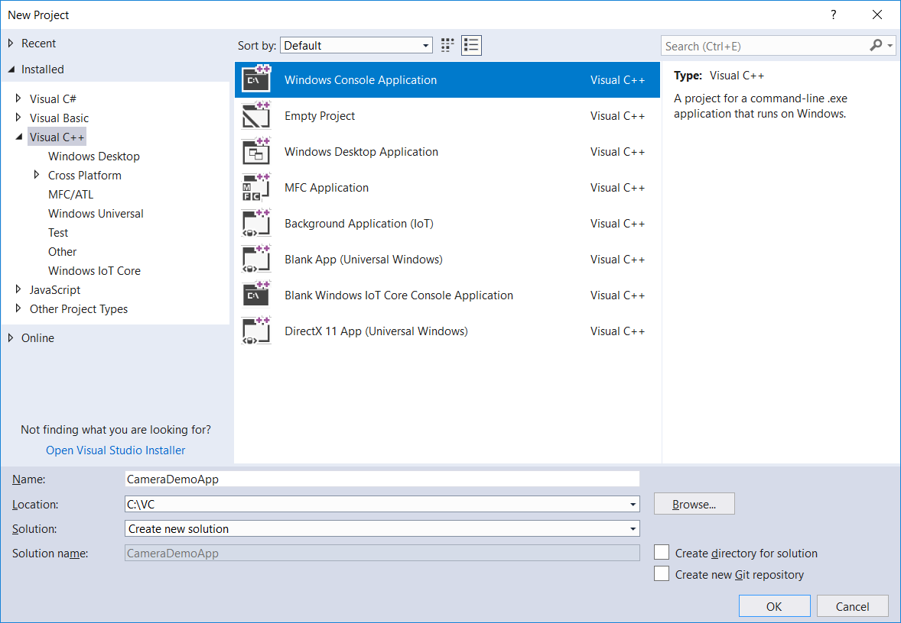
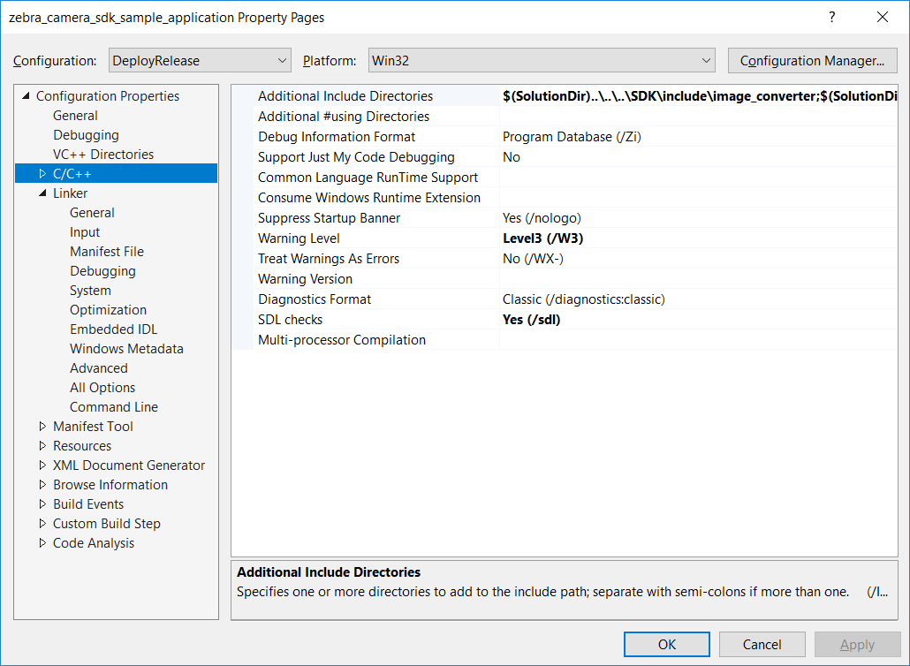
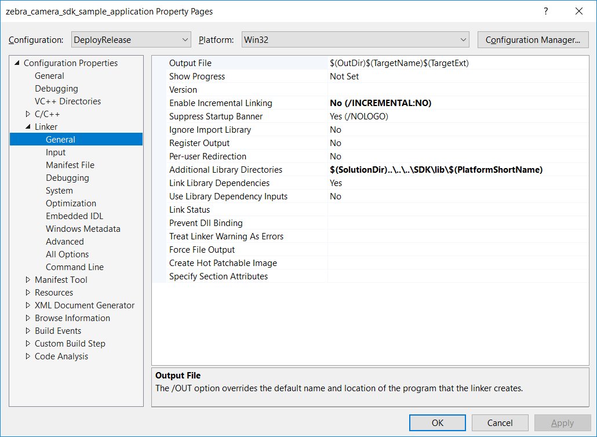
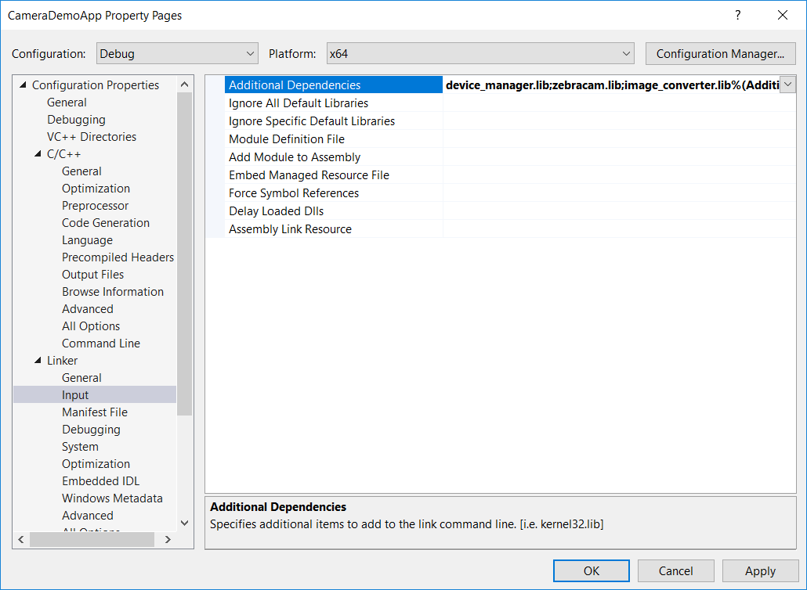
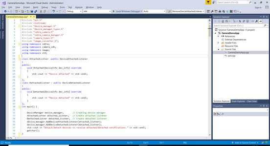

Overview
This provides step-by-step instructions to import the Bioptic Color Camera SDK module and build Windows 10/Window 7 SP1 applications to work with the MP7 Color Camera.
The Bioptic Color Camera SDK supports building C++ applications with C++11 standard or above. To build C++ applications for Windows 10/Window 7(SP1) use Visual Studio 2017 or later.
The SDK includes a COM wrapper DLL (camera_sdk.dll) that enables development of C# MP7 Color Camera applications. C++/C# sample applications show how to access the camera SDK in C++/.Net.
Creating Bioptic Color Camera SDK Windows Applications
To create a VC++ Windows Project in Visual Studio 2017:
-
Start Visual Studio 2017->Select File → New → Project → Visual C++, create a new Windows Console Application project and follow the on-screen steps in Visual Studio.
Figure 1: Create New Project -
Add the Camera SDK include directories to the project. Select Project → Properties → Configuration Properties → C++, in "Additional Include Directories" specify the path of the Camera SDK include directory (C:\Program Files (x86)\Zebra Technologies\Barcode Scanners\Bioptic Camera\SDK\include) sub folders:
- camera_sdk\inc
- device_manager\inc
- camera_sdk\firmware_update
- image_converter
Figure 2: Camera SDK include Folders Specification -
Add the Camera SDK library directory to the project. Select Project → Properties → Configuration Properties → Linker, in "Additional Library Directories" specify the path of the Camera SDK lib folder (C:\Program Files (x86)\Zebra Technologies\Barcode Scanners\Bioptic Camera\SDK\Release\lib\x86) where the device_manager.lib, image_converter.lib and zebracam.lib lib files are located. (Note: for debug projects use the SDK debug libs path).
Figure 3: Camera SDK Libs -
Add the Camera SDK library files to the project. Select Project → Properties → Configuration Properties → Linker → Input, in "Additional Dependencies" specify the Camera SDK libs:
- device_manager.lib
- devicewatcher.lib
- image_converter.lib
- zebracam.lib
- uvc_adapter.lib
- devmgr_adapter.lib
Figure 4: Camera SDK Lib Files Specifications -
The Camera SDK requires the following include files:
#include "device_manager.h" #include "device_manager_types.h" #include "zebra_camera.h" #include "zebra_camera_manager.h" #include "camera_types.h" #include "image_converter.h"; -
Import the following namespaces into the application to access the Camera SDK.
using namespace zebra; using namespace camera_sdk; using namespace image; -
Build the camera application.
Figure 5: Example Camera SDK Sample Application
Building and Running Project
Before building/running make sure the following Camera SDK dll files are in the target application folder:
- device_manager.dll
- zebracam.dll
- image_converter.dll
- devmgr_adapter.dll
- uvc_adapter.dll
When the application is built and run attach the MP7 Camera (attach/detach events are notified).
NOTE : Make sure the specified DLLs are present in the target application folder.